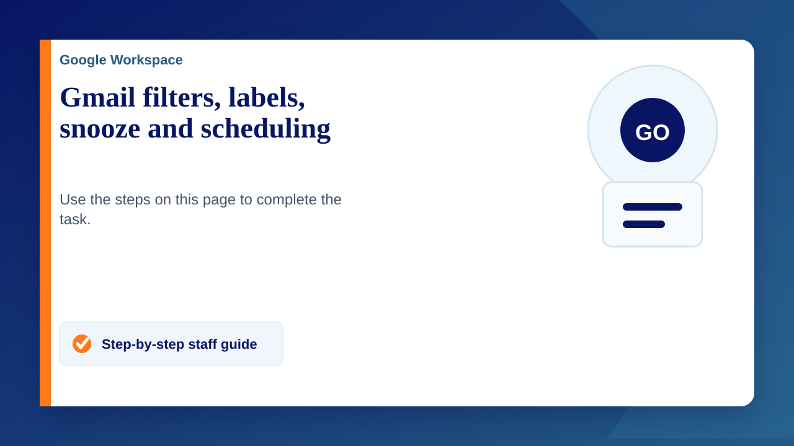

Use the steps below to organise email and control when messages return to your inbox or are sent.
Create filters
Filters apply actions automatically to incoming email based on criteria such as sender, keywords or subject.
- Click the search bar at the top of Gmail.
- Enter an email address, keyword or other search criterion.
- Click the search options icon, then choose "Create filter".
- Select the actions to apply, such as "Skip the Inbox", "Apply the label" or "Mark as read".
Use labels
- In the left-hand menu, click "Create new label".
- Use filters if you want messages to be labelled automatically.
- Click a label to see messages assigned to it.
Snooze an email
- Hover over a message in your inbox.
- Click the clock icon on the right-hand side.
- Choose when the message should return to your inbox.
Schedule an email
- Compose your message.
- Click the dropdown arrow next to the "Send" button.
- Select "Schedule send", then choose the date and time.
Submit a support ticket if you need help configuring Gmail for your work.